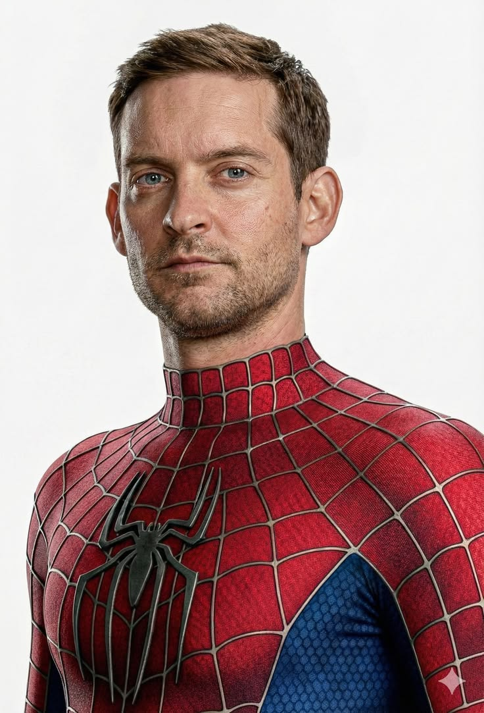

Peter Parker
The original cinematic Spider-Man who learned that great power always comes with great responsibility.
MOVIES: SPIDER-MAN (2002), SPIDER-MAN 2 (2004), SPIDER-MAN 3 (2007)POWERS: Super Strength, Spider-Sense, Wall-Crawling, Agility and Organic Web-Shooting.
ORIGIN: Peter Parker is bitten by a genetically engineered spider during a school field trip, gaining spider-like abilities and becoming Spider-Man.
PORTRAYED BY: Tobey Maguire